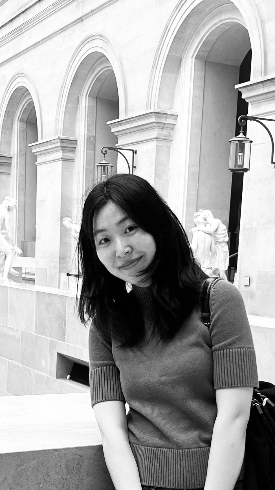

Juah Kim
View CV →
Architecture
Selected Works
← Back
← Back

Juah
Kim
Master of Architecture
University of Auckland, NZ
[email protected]
+64 027 339 3541
Education
Master of Architecture (Professional)
The University of Auckland, New Zealand
2024–2025
English Language Academy
The University of Auckland, New Zealand
2022–2023
Bachelor of Architecture
Changwon National University, Korea
2022
Experience
Internship
LH Korea Land and Housing Corporation
2020
Internship
Architects' Office, Sam-dong
2019
Office of Architectural Urban
Changwon, Korea
2018
Awards
Graduation Architecture Exhibition — Prize
Urban Renovation
2021
Eco-Friendly Architectural Design Contest
School Renovation
2019
Task Exhibition — Prize
Commercial Facilities
2018
Skills
AutoCAD
Revit
Illustrator
Photoshop
SketchUp
Vray
Twinmotion